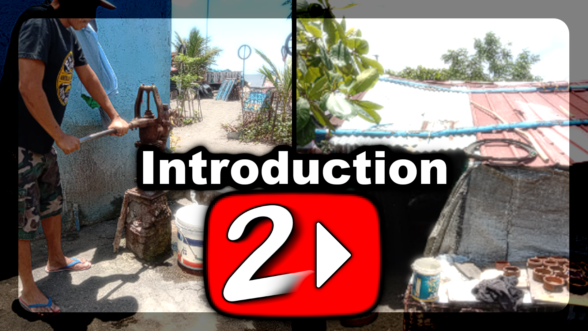

Welcome to our website! This website holds the IPBA for the LifeLabs subject.
In here, you'll find tabs for different sections of said IPBA. The tabs are: About Us, Introduction, Chosen Category, Target
Audience, and Needs.
This project is dedicated to a hypothetical fundraising project and a promotional YouTube Channel to help the community of
"
Sitio Bebe".
Sitio Bebe is a community in need of help as it has been known that they are lacking in health professionals. Which is why we
are tasked with making an elaborate plan that aims to generate enough money to give to health organizations
that will help the community of Sitio Bebe.
The plan includes the said YouTube Channel. In short, the channel will be used to posts
educational documentary-style videos that will persuade people into entering a fundraising concert
to help the community of Sitio Bebe.